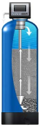

Фильтры обезжелезевания воды
Вы знаете, что чистая вода – это основа нашего здоровья и долголетия. К сожалению, в крупных городах и промышленных регионах, таких как Санкт – Петербург и Ленинградская область, качество воды оставляет желать лучшего. Здесь нам с вами на помощь приходят фильтры для воды – приборы, которые удаляют вредные вещества и примеси из питьевой воды.
Фильтры для очистки воды (железо и марганец – наиболее распространенные примеси в Ленинградской области) необходимы для установки как в городских квартирах, так и в загородных домах. Превышенное содержание железа и марганца встречается как в подземных источниках, так и в поверхностных водоемах. Купить фильтр обезжелезивания воды вы можете в компании «Аква-ресурс».
Почему повышенное содержание железа – это вредно?
Небольшие превышения ПДК делают воду непригодной для использования даже для технических целей. Более того, железо при превышении нормы оказывает негативное действие на печень, может вызывать аллергические реакции. Марганец негативно влияет на ЦНС. Вот почему очистка воды от железа необходима всем, кто заботится о своем здоровье. Использование воды для хозяйственно-питьевых нужд возможно только после очистки воды от компонентов, содержание которых превышает установленные нормы. Очистка воды крайне важна в Санкт–Петербурге ввиду низкого качества воды в этом регионе, и проводиться она может разными способами. Метод обезжелезивания и деманганации воды зависит от формы физического состояния удаляемых элементов, их концентрации, а также необходимой производительности системы. Поэтому для подбора качественного и эффективного фильтра для обезжелезивания воды рекомендуем вам сначала провести ее анализ. Если вам необходима очистка воды Спб, специалисты нашей компании готовы помочь вам подобрать фильтры для очистки воды (железо, марганец). Позвоните нам или отправьте запрос по электронной почте. Также вы можете вызвать специалиста нашей компании на объект для отбора пробы воды для анализа и проверку метода очистки воды, замера помещения и составления схемы для системы водоподготовки.
Решить все вышеперечисленные проблемы вам помогут фильтры для очистки воды. Железо, марганец, сероводород выводятся из водопроводной воды как реагентно, так и безреагентно.
В природе железо находится в двух степенях окисления Fe2+ и Fe3+ и множестве форм. В подземных водах железо и марганец преимущественно находится в растворимых соединениях Fe2+ и Mn2+. На вид вода абсолютно прозрачная, но после контакта с кислородом выпадает нерастворимый осадок бурого оттенка – гидроксид железа. Концентрации загрязнений в поверхностных водах значительно ниже, в большинстве случаев это уже окисленные элементы в виде взвеси либо органические комплексы.
Очистка воды крайне важна в Санкт–Петербурге ввиду низкого качества воды в этом регионе, и проводиться она может разными способами. Метод обезжелезивания и деманганации воды зависит от формы физического состояния удаляемых элементов, их концентрации, а также необходимой производительности системы. Поэтому для подбора качественного и эффективного фильтра для обезжелезивания воды рекомендуем вам сначала провести ее анализ.
Если вам необходима очистка воды Спб, специалисты нашей компании готовы помочь вам подобрать фильтры для очистки воды (железо, марганец). Позвоните нам или отправьте запрос по электронной почте. Также вы можете вызвать специалиста нашей компании на объект для отбора пробы воды для анализа и проверку метода очистки воды, замера помещения и составления схемы для системы водоподготовки.
-
ФИЛЬТРЫ БЕЗРЕАГЕНТНОЙ ОЧИСТКИ ВОДЫ ОТ ЖЕЛЕЗА
Принцип работы основан на прохождении воды через фильтрующий материал, который служит катализатором реакции окисления. Очистка воды от железа при этом происходит следующим образом: окисленное железо, марганец и сероводород переходят в нерастворимое состояние и выпадают в осадок, который задерживается в слое фильтрующего материала и затем удаляется при обратной промывке фильтра.
Для эффективной работы фильтров возможно использование систем аэрации, пропорционального дозирования гипохлорита натрия и систем озонирования.
В качестве фильтрующего материала систем безреагентного обезжелезивания используются: Pyrolox, МЖФ, Quantum DMI-65, Birm, Сорбент АС, Сорбент МС, каждая из которых имеет свои особенности применения.
-
ФИЛЬТРЫ РЕАГЕНТНОЙ ОЧИСТКИ ВОДЫ ОТ ЖЕЛЕЗА
Принцип работы основан на прохождении воды через фильтрующий материал, который служит окислителем. Очистка воды от железа происходит следующим образом: окисленное железо, марганец и сероводород переходят в нерастворимое состояние и выпадают в осадок, который задерживается в слое фильтрующего материала и затем удаляется при обратной промывке фильтра. После выработки окислительных свойств фильтрующего материала проводится регенерация раствором перманганата калия (при медленном потоке воды концентрированный раствор проходит через толщу загрузки, восстанавливая окислительные свойства).
В качестве фильтрующего материала систем реагентного обезжелезивания используются Manganese GreenSand и Clack MTM.
-
ФИЛЬТРЫ ИОНООБМЕННОГО ОБЕЗЖЕЛЕЗИВАНИЯ ВОДЫ
Принцип работы основан на прохождении воды через ионообменную смолу, где происходит удаление ионов железа и марганца в растворенной форме, а также солей жесткости за счет замены их на ионы натрия. Восстановление в ионообменной емкости происходит путем регенерации раствором поваренной слои (разведенная в солевом баке таблетированная соль) при обратной промывке
Обезжелезивание ионообменным методом используют только при условии, если железо и марганец находится в растворенной форме Fe2+ и Mn2+. Преимуществом фильтров данного типа является сочетания качеств умягчителя и обезжелезивателя в одном фильтре.
В качестве фильтрующего материала систем ионообменного обезжелезивания воды используются Ecotar, EcoMix, ЮникЭко, SoftEx, FerroSoft.
Узнайте цену на фильтры обезжелезивания воды, обратившись к нашим специалистам.
Очистка воды (СПб и Ленинградская область) от компании "Аква-Ресурс" - залог Вашего здоровья!
-
Фильтры для очистки воды для скважин
Выбор фильтра для очистки воды для скважины зависит от состава воды, норм потребления и сезонности использования водопровода. Более того, на различных этапах фильтрации могут потребоваться различные фильтры. Именно поэтому эффективная система фильтрации, в большинстве случаев, включает в себя несколько элементов:
-
– Фильтры обратного осмоса;
-
– Умягчители;
-
– Угольные фильтры;
-
– Обезжелезиватели;
-
– Ультрафиолетовые фильтры.
Фильтры обратного осмоса качественно удаляют железо, нитраты и соли. Во время фильтрации вода проходит сквозь мембрану, которая задерживает вредные вещества.
Умягчители активно используются для удаления солей посредством ионного обмена. Обрабатываемая вода проходит через ионообменную смолу, заменяющую ионы магния и калия на ионы натрия.
Принцип удаления железа в обезжелезивателях основывается на применении фильтрующей засыпки. Именно она является катализатором основных окислительных реакций.
Угольные фильтры отлично справляются с избавлением от механических примесей, органических соединений, сероводорода и хлора. В результате, вода приобретает естественный цвет и становится приятной на вкус.
Основная задача ультрафиолетовых фильтров заключается в уничтожении бактерий и вирусов. Обеззараживание происходит благодаря фотохимической реакции.
-
-
Фильтры для очистки воды — цены и особенности
На рынке представлен большой выбор фильтров для очистки воды, цены на которые отличаются в зависимости от множества факторов
Прежде всего, на стоимость фильтра влияет его тип. К примеру, фильтры с безреагентным обезжелезиванием обычно дешевле, чем с реагентным. Кроме того, цена зависит от мощности фильтра, материалов, из которого он изготовлен, и т.д.
Использование обезжелезивающих фильтров от нашей компании дает вам следующие преимущества:
-
– Долговечность. Наши фильтры служат 10-15 лет, при этом ежегодные потери не превышают 2%, поэтому вам не нужно часто их менять.
-
– Полный фильтроцикл системы. Эффективность фильтроцикла в несколько раз выше, чем у традиционных фильтров, а, значит, вы можете быть спокойны за качество вашей питьевой воды.
-
– Совместимость с любыми окислителями. Безреагентные обезжелезиватели работают с натрием, гипохлоритом, озоном и другими, что очень удобно во время эксплуатации системы.
-
– Устойчивая эффективность. Использование безреагентного обезжелезивателя никак не влияет на качество удаления соединений железа.
Вы можете убедиться, что использование различных методик очистки воды и технологий по удалению железа позволяют подобрать именно то, что максимально соответствует вашим требованиям. Поэтому советуем вам начать выбор фильтра не с его стоимости, а с четкого определения условий его эксплуатации и качества воды. Только в этом случае он сможет эффективно очищать воду, уничтожать все бактерии и вирусы, а также удалять соединения железа.
Позаботьтесь о здоровье своей семьи, приходите к нам за фильтрами!
-
-
Особенности фильтров грубой очистки воды
-
✓ Фильтр грубой очистки воды, купить который вы можете в «Аква-ресурс», обеспечивает снабжение отфильтрованной водой даже в процессе обратной промывки.
-
✓ Патентованная система обратной промывки - быстродействующая и полная очистка фильтра малым количеством воды.
-
✓ Фильтр может быть модифицирован путем установки автоматического привода обратной промывки с использованием байонетного соединения.
-
✓ Фильтр имеет большую площадь поверхности.
-
✓ Чаша фильтра из ударопрочного прозрачного материала позволяет легко проверить степень его загрязнения.
-
✓ Вкладыш фильтра полностью взаимозаменяем.
-
✓ Фильтр надежен и проверен.
-
✓ Фильтр имеет стандартный выпускной фитинг.
-
✓ Установка фильтра грубой очистки воды не вызывает сложностей и может быть выполнена самостоятельно.
-
✓ Низкая цена фильтров грубой очистки в «Аква-ресурс».
-
-
КАРТРИДЖНЫЕ ФИЛЬТРЫ BIG BLUE И SLIMLINE
Технические параметры Big Blue 10" Big Blue 20" Slimline 10" Slimline 20" Подсоединительный диаметр 1" 2" 3/4" 3/4" Размер корпуса 184x333 184x594 115x310 115x560 Рабочая температура 56 56 52 52 Рабочее давление атм 10,2 10,2 8,6 8,6 Max поток л/мин 58 76 20 39 -
Классификация сорбционных фильтров
-
По типу эксплуатации:
-
✓ непрерывный;
-
✓ периодический.
-
-
По состоянию слоёв сорбента:
-
✓ движущийся;
-
✓ периодический.
-
-
По гидродинамическому режиму:
-
✓ системы смешения;
-
✓ системы промежуточного типа;
-
✓ системы вытеснения.
-
-
По направлению очистки:
-
✓ прямоточная;
-
✓ противоточная;
-
✓ смешенного движения.
-
-
По конструкции системы очистки:
-
✓ емкостная;
-
✓ колонная.
-
-
| Артикул | Наименование | Цена, руб. | |
|---|---|---|---|
| < 5 шт. | > 5 шт. | ||
| FWCCNW250 | NW25 Фильтр механический 1" с ключом и мешком 25µ, 5,5 м³/час | 5 600 | 5 152 |
| FWCCNW320 | NW32 Фильтр механический 1 ¼ " с ключом и мешком 25µ, 6,5 м³/час | 7 952 | 7 336 |
| FWCCNW500 | NW500(в комплекте с муфт. соединениями) 2" с ключом и мешком 25µ, 20,0 м³/час | 24360 | 22512 |
| FWCCNW650 | NW650(в комплекте с фланцами) 2 ½" с ключом и мешком 25µ, 25,0 м³/час | 29736 | 27440 |
| FWCCNW800 | NW800 (в комплекте с фланцами) 3" с ключом и мешком 25µ, 30,0 м³/час | 32592 | 30072 |
| V1CIDM(G-K)-1" | WS CI 1" Softener,Таймер-счетчик, дренаж 1" | 17 346 | 15 064 |
| NW-25-5 | Мешок для NW 25 (5 штук) полипропилен 5;10;25;50;100 мкм | 1064 | 896 |
| NW-32-5 | Мешок для NW 32 (5 штук) полипропилен 5;10;25;50;100 мкм | 1456 | 1232 |
| NW-50-62-75 | Мешок для NW 50/62/75 (5 штук) полипропилен 1;5;10;25;50;100 мкм | 1680 | 1512 |
| V125CIBTZ-3/4" | WS CI 1.25" Filter,Таймер, дренаж 3/4" | 18 108 | 16 184 |
| NW18-25-32 | Настенный крепеж (NW18/25/32) | 921 | 0 |
| DUO-1 | Настенный крепеж DUO | 2566 | 0 |
| NW-500-650-800 | Настенный крепеж (NW 500/650/800) | 4178 | 0 |
| MAN-1-4 | Манометр ¼ " | 1042 | 0 |